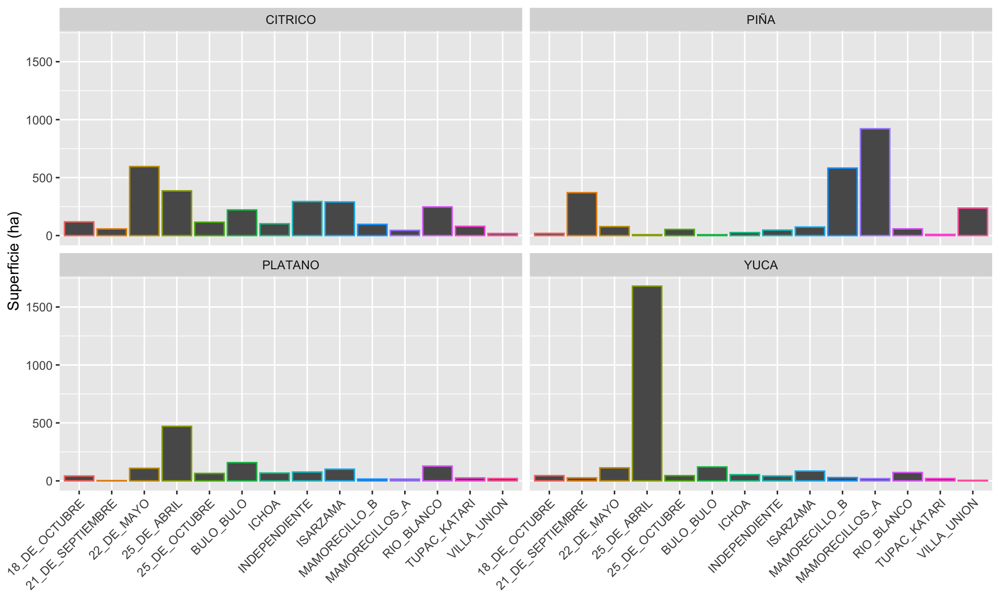

Se presenta un resumen de resultados del censo agropecuario del municipio de Entre Ríos del departamento de Cochabamba.
La base de datos del Censo Agropecuario del Municipio de Entre Ríos ha sido proporcionado por la Dirección de Desarrollo Productivo del mismo municipio.
Importar la librerias que se usarán durante el análisis de la base de datos del Censo Agropecuario del Municipio de Entre Ríos.
##Importar librerias
library(tidyverse)
library(kableExtra)
# A tibble: 6 × 24
ID DISTRITO CENTRAL SINDICATO NOMBRES CI PIÑA BANANO PLATANO
<dbl> <chr> <chr> <chr> <chr> <chr> <dbl> <dbl> <dbl>
1 1 V ISARZAMA PUERTO_I… FRANCI… 3641… NA NA NA
2 2 V ISARZAMA PUERTO_I… FIDEL … 4437… NA NA NA
3 3 V ISARZAMA PUERTO_I… ALFRED… 5653… NA NA NA
4 4 V ISARZAMA PUERTO_I… CATALI… 6537… NA NA NA
5 5 V ISARZAMA PUERTO_I… PANTAL… 4634… NA NA NA
6 6 V ISARZAMA PUERTO_I… JORGE … 5674… NA NA NA
# … with 15 more variables: CITRICO <dbl>, CAFÉ <dbl>, CACAO <dbl>,
# COPOAZU <dbl>, MARACUYA <dbl>, PALMITO <dbl>, CAMUCAMU <dbl>,
# PAPAYA <dbl>, YUCA <dbl>, GANADO_CARNE <dbl>, GANADO_LECHE <dbl>,
# POLLO_ENGORDE <dbl>, POLLO_POSTURA <dbl>, PISCICULTURA <dbl>,
# APICULTURA <dbl>Esta base de datos necesita algunos ajustes para su análisis. Uno de ellos es pivotar los datos para que pueda ser analizada de forma mas adecuada.
# A tibble: 6 × 8
ID DISTRITO CENTRAL SINDICATO NOMBRES CI RUBROS CANTIDAD
<dbl> <chr> <chr> <chr> <chr> <chr> <chr> <dbl>
1 1 V ISARZAMA PUERTO_ICHILO FRANCIS… 3641… PIÑA NA
2 1 V ISARZAMA PUERTO_ICHILO FRANCIS… 3641… BANANO NA
3 1 V ISARZAMA PUERTO_ICHILO FRANCIS… 3641… PLATA… NA
4 1 V ISARZAMA PUERTO_ICHILO FRANCIS… 3641… CITRI… 1.2
5 1 V ISARZAMA PUERTO_ICHILO FRANCIS… 3641… CAFÉ NA
6 1 V ISARZAMA PUERTO_ICHILO FRANCIS… 3641… CACAO NA A continuación se presenta un resumen de los datos que refieren a la cantidad de productores por cultivo, superficie en hectareas y promedio de superficie.
| RUBROS | Productores | Superficie | Media | Mínimo | Máximo |
|---|---|---|---|---|---|
| CITRICO | 2364 | 2663.311 | 1.1266121 | 0.00 | 55 |
| PIÑA | 1623 | 2487.740 | 1.5328035 | 0.01 | 20 |
| YUCA | 1074 | 2351.525 | 2.1895019 | 0.02 | 50 |
| PLATANO | 1240 | 1291.140 | 1.0412419 | 0.01 | 20 |
| CAFÉ | 458 | 314.350 | 0.6863537 | 0.03 | 25 |
| BANANO | 317 | 304.500 | 0.9605678 | 0.08 | 20 |
| COPOAZU | 410 | 222.170 | 0.5418780 | 0.01 | 5 |
| PAPAYA | 142 | 178.835 | 1.2594014 | 0.10 | 13 |
| PALMITO | 71 | 86.320 | 1.2157746 | 0.10 | 12 |
| CACAO | 154 | 77.185 | 0.5012013 | 0.08 | 2 |
| MARACUYA | 67 | 53.595 | 0.7999254 | 0.10 | 4 |
| CAMUCAMU | 28 | 18.700 | 0.6678571 | 0.10 | 3 |
Por ejemplo del resultado se puede inferir que la población del municipio de Entre Ríos se dedican a producir citricos. Por tanto, ocupa mayor superficie cultivado seguida por piña, yuca y plátano.
En la siguiente tabla se presenta un resumen clasificado por Central y cultivos, las cuales estan en ranking en base a superficie.
| CENTRAL | RUBROS | Productores | Superficie | Prom | Mínimo | Máximo |
|---|---|---|---|---|---|---|
| 25_DE_ABRIL | YUCA | 153 | 1680.000 | 10.9803922 | 0.500 | 50.00 |
| MAMORECILLOS_A | PIÑA | 433 | 921.500 | 2.1281755 | 0.500 | 10.00 |
| 22_DE_MAYO | CITRICO | 391 | 595.100 | 1.5219949 | 0.000 | 55.00 |
| MAMORECILLO_B | PIÑA | 356 | 582.050 | 1.6349719 | 0.250 | 10.00 |
| 25_DE_ABRIL | PLATANO | 134 | 470.500 | 3.5111940 | 0.500 | 20.00 |
| 25_DE_ABRIL | CITRICO | 155 | 385.500 | 2.4870968 | 0.500 | 15.00 |
| 21_DE_SEPTIEMBRE | PIÑA | 168 | 369.800 | 2.2011905 | 0.300 | 20.00 |
| INDEPENDIENTE | CITRICO | 108 | 293.500 | 2.7175926 | 0.500 | 15.00 |
| ISARZAMA | CITRICO | 259 | 290.000 | 1.1196911 | 0.300 | 10.00 |
| RIO_BLANCO | CITRICO | 226 | 246.980 | 1.0928319 | 0.080 | 10.00 |
| VILLA_UNION | PIÑA | 148 | 237.100 | 1.6020270 | 0.300 | 10.00 |
| BULO_BULO | CITRICO | 147 | 220.840 | 1.5023129 | 0.080 | 12.00 |
| BULO_BULO | PLATANO | 110 | 157.280 | 1.4298182 | 0.080 | 5.00 |
| RIO_BLANCO | PLATANO | 128 | 127.290 | 0.9944531 | 0.080 | 4.00 |
| BULO_BULO | YUCA | 79 | 119.930 | 1.5181013 | 0.090 | 6.00 |
| 18_DE_OCTUBRE | CITRICO | 121 | 118.451 | 0.9789339 | 0.001 | 8.00 |
| 25_DE_OCTUBRE | CITRICO | 248 | 114.890 | 0.4632661 | 0.100 | 4.00 |
| 22_DE_MAYO | YUCA | 116 | 112.100 | 0.9663793 | 0.200 | 11.00 |
| 25_DE_ABRIL | CAFÉ | 41 | 111.000 | 2.7073171 | 0.500 | 12.00 |
| 22_DE_MAYO | PLATANO | 129 | 108.300 | 0.8395349 | 0.300 | 3.00 |
| 25_DE_ABRIL | PAPAYA | 32 | 102.500 | 3.2031250 | 0.500 | 13.00 |
| ICHOA | CITRICO | 264 | 101.660 | 0.3850758 | 0.100 | 2.00 |
| ISARZAMA | PLATANO | 108 | 100.600 | 0.9314815 | 0.300 | 10.00 |
| MAMORECILLO_B | CITRICO | 143 | 96.530 | 0.6750350 | 0.080 | 6.00 |
| ISARZAMA | BANANO | 34 | 92.300 | 2.7147059 | 0.300 | 20.00 |
| ISARZAMA | YUCA | 97 | 84.400 | 0.8701031 | 0.300 | 4.00 |
| TUPAC_KATARI | CITRICO | 148 | 79.840 | 0.5394595 | 0.100 | 3.00 |
| 22_DE_MAYO | PIÑA | 68 | 77.000 | 1.1323529 | 0.200 | 5.00 |
| INDEPENDIENTE | PLATANO | 69 | 76.160 | 1.1037681 | 0.160 | 4.00 |
| ICHOA | CAFÉ | 198 | 75.700 | 0.3823232 | 0.100 | 25.00 |
| ISARZAMA | PIÑA | 78 | 73.500 | 0.9423077 | 0.500 | 4.00 |
| RIO_BLANCO | YUCA | 90 | 72.300 | 0.8033333 | 0.080 | 3.00 |
| ICHOA | PLATANO | 240 | 67.250 | 0.2802083 | 0.100 | 1.00 |
| 25_DE_OCTUBRE | PLATANO | 169 | 63.820 | 0.3776331 | 0.100 | 2.00 |
| RIO_BLANCO | PIÑA | 78 | 58.060 | 0.7443590 | 0.080 | 3.00 |
| 21_DE_SEPTIEMBRE | CITRICO | 76 | 57.000 | 0.7500000 | 0.200 | 2.00 |
| ICHOA | YUCA | 151 | 53.275 | 0.3528146 | 0.100 | 3.00 |
| 25_DE_OCTUBRE | PIÑA | 127 | 52.750 | 0.4153543 | 0.100 | 4.00 |
| 22_DE_MAYO | BANANO | 58 | 48.400 | 0.8344828 | 0.200 | 6.00 |
| INDEPENDIENTE | PIÑA | 36 | 46.820 | 1.3005556 | 0.160 | 6.00 |
| 18_DE_OCTUBRE | YUCA | 52 | 45.170 | 0.8686538 | 0.020 | 4.00 |
| MAMORECILLOS_A | CITRICO | 59 | 45.020 | 0.7630508 | 0.080 | 3.00 |
| 25_DE_OCTUBRE | YUCA | 123 | 44.800 | 0.3642276 | 0.100 | 1.00 |
| INDEPENDIENTE | YUCA | 39 | 42.000 | 1.0769231 | 0.500 | 3.00 |
| 18_DE_OCTUBRE | PLATANO | 34 | 41.970 | 1.2344118 | 0.010 | 6.00 |
| 21_DE_SEPTIEMBRE | PALMITO | 13 | 40.000 | 3.0769231 | 0.500 | 12.00 |
| ICHOA | CACAO | 68 | 38.625 | 0.5680147 | 0.100 | 2.00 |
| INDEPENDIENTE | BANANO | 24 | 33.500 | 1.3958333 | 0.500 | 6.00 |
| 22_DE_MAYO | COPOAZU | 59 | 33.000 | 0.5593220 | 0.100 | 2.00 |
| 25_DE_ABRIL | BANANO | 6 | 32.500 | 5.4166667 | 0.500 | 10.00 |
| 22_DE_MAYO | CAFÉ | 28 | 31.700 | 1.1321429 | 0.300 | 5.00 |
| MAMORECILLO_B | YUCA | 51 | 28.450 | 0.5578431 | 0.080 | 1.00 |
| TUPAC_KATARI | COPOAZU | 55 | 27.850 | 0.5063636 | 0.100 | 2.20 |
| 25_DE_OCTUBRE | BANANO | 81 | 27.030 | 0.3337037 | 0.100 | 1.00 |
| BULO_BULO | BANANO | 31 | 26.280 | 0.8477419 | 0.080 | 3.00 |
| 25_DE_OCTUBRE | COPOAZU | 80 | 25.850 | 0.3231250 | 0.100 | 1.00 |
| ICHOA | PIÑA | 67 | 25.800 | 0.3850746 | 0.100 | 6.00 |
| 21_DE_SEPTIEMBRE | YUCA | 27 | 25.300 | 0.9370370 | 0.300 | 3.00 |
| TUPAC_KATARI | PLATANO | 55 | 25.190 | 0.4580000 | 0.100 | 1.80 |
| 25_DE_OCTUBRE | CAFÉ | 61 | 23.300 | 0.3819672 | 0.100 | 2.00 |
| ICHOA | COPOAZU | 48 | 22.200 | 0.4625000 | 0.100 | 5.00 |
| VILLA_UNION | PLATANO | 18 | 20.500 | 1.1388889 | 0.500 | 2.00 |
| MAMORECILLO_B | COPOAZU | 29 | 20.240 | 0.6979310 | 0.080 | 2.00 |
| TUPAC_KATARI | YUCA | 52 | 20.160 | 0.3876923 | 0.100 | 1.00 |
| MAMORECILLOS_A | YUCA | 36 | 19.140 | 0.5316667 | 0.160 | 2.00 |
| ISARZAMA | PALMITO | 17 | 19.000 | 1.1176471 | 0.500 | 4.00 |
| 18_DE_OCTUBRE | PIÑA | 20 | 18.930 | 0.9465000 | 0.010 | 3.00 |
| BULO_BULO | PAPAYA | 9 | 18.200 | 2.0222222 | 0.200 | 6.00 |
| VILLA_UNION | CITRICO | 19 | 18.000 | 0.9473684 | 0.500 | 5.00 |
| MAMORECILLOS_A | CAFÉ | 17 | 16.160 | 0.9505882 | 0.160 | 2.00 |
| 18_DE_OCTUBRE | COPOAZU | 32 | 15.970 | 0.4990625 | 0.010 | 1.00 |
| MAMORECILLO_B | PLATANO | 27 | 15.240 | 0.5644444 | 0.080 | 1.00 |
| MAMORECILLOS_A | PLATANO | 15 | 15.240 | 1.0160000 | 0.080 | 4.00 |
| RIO_BLANCO | BANANO | 20 | 14.660 | 0.7330000 | 0.080 | 2.00 |
| ICHOA | PAPAYA | 30 | 14.175 | 0.4725000 | 0.100 | 3.00 |
| 22_DE_MAYO | PAPAYA | 20 | 14.100 | 0.7050000 | 0.300 | 2.00 |
| BULO_BULO | COPOAZU | 12 | 14.100 | 1.1750000 | 0.200 | 4.00 |
| 25_DE_ABRIL | MARACUYA | 7 | 14.000 | 2.0000000 | 1.000 | 4.00 |
| 25_DE_OCTUBRE | PAPAYA | 26 | 13.600 | 0.5230769 | 0.100 | 2.00 |
| BULO_BULO | CAFÉ | 54 | 13.300 | 0.2462963 | 0.200 | 0.25 |
| INDEPENDIENTE | PALMITO | 11 | 13.000 | 1.1818182 | 0.500 | 2.50 |
| INDEPENDIENTE | COPOAZU | 22 | 12.820 | 0.5827273 | 0.160 | 2.00 |
| ISARZAMA | COPOAZU | 16 | 12.600 | 0.7875000 | 0.300 | 1.20 |
| 18_DE_OCTUBRE | CAFÉ | 13 | 12.410 | 0.9546154 | 0.030 | 6.00 |
| TUPAC_KATARI | CAFÉ | 28 | 12.200 | 0.4357143 | 0.200 | 1.00 |
| ISARZAMA | MARACUYA | 11 | 12.000 | 1.0909091 | 0.500 | 3.00 |
| 25_DE_ABRIL | COPOAZU | 6 | 11.500 | 1.9166667 | 0.500 | 5.00 |
| MAMORECILLOS_A | COPOAZU | 15 | 10.160 | 0.6773333 | 0.160 | 1.50 |
| ICHOA | BANANO | 33 | 10.100 | 0.3060606 | 0.100 | 1.00 |
| TUPAC_KATARI | PIÑA | 26 | 9.730 | 0.3742308 | 0.100 | 1.00 |
| TUPAC_KATARI | BANANO | 15 | 8.400 | 0.5600000 | 0.200 | 1.50 |
| RIO_BLANCO | COPOAZU | 23 | 8.080 | 0.3513043 | 0.160 | 1.00 |
| ISARZAMA | PAPAYA | 10 | 8.000 | 0.8000000 | 0.500 | 1.00 |
| 25_DE_ABRIL | PIÑA | 8 | 7.500 | 0.9375000 | 0.500 | 2.00 |
| MAMORECILLO_B | CAFÉ | 5 | 7.500 | 1.5000000 | 0.500 | 4.00 |
| BULO_BULO | PIÑA | 10 | 7.200 | 0.7200000 | 0.200 | 1.50 |
| 25_DE_OCTUBRE | CACAO | 29 | 7.100 | 0.2448276 | 0.100 | 0.50 |
| ICHOA | MARACUYA | 18 | 6.975 | 0.3875000 | 0.100 | 1.00 |
| INDEPENDIENTE | CACAO | 9 | 6.000 | 0.6666667 | 0.500 | 1.00 |
| RIO_BLANCO | MARACUYA | 6 | 6.000 | 1.0000000 | 0.500 | 2.00 |
| 22_DE_MAYO | MARACUYA | 9 | 5.800 | 0.6444444 | 0.300 | 1.00 |
| 18_DE_OCTUBRE | BANANO | 8 | 5.680 | 0.7100000 | 0.160 | 3.00 |
| 22_DE_MAYO | CACAO | 12 | 5.400 | 0.4500000 | 0.100 | 1.00 |
| ISARZAMA | CAMUCAMU | 5 | 5.000 | 1.0000000 | 0.500 | 2.00 |
| RIO_BLANCO | CAMUCAMU | 3 | 5.000 | 1.6666667 | 1.000 | 3.00 |
| TUPAC_KATARI | CACAO | 11 | 5.000 | 0.4545455 | 0.200 | 1.00 |
| VILLA_UNION | YUCA | 8 | 4.500 | 0.5625000 | 0.500 | 1.00 |
| ICHOA | PALMITO | 10 | 4.400 | 0.4400000 | 0.125 | 1.00 |
| 21_DE_SEPTIEMBRE | COPOAZU | 8 | 4.300 | 0.5375000 | 0.300 | 1.00 |
| 21_DE_SEPTIEMBRE | CAFÉ | 3 | 4.000 | 1.3333333 | 1.000 | 2.00 |
| ICHOA | CAMUCAMU | 7 | 3.550 | 0.5071429 | 0.100 | 1.00 |
| VILLA_UNION | COPOAZU | 5 | 3.500 | 0.7000000 | 0.500 | 1.00 |
| 18_DE_OCTUBRE | CACAO | 7 | 3.400 | 0.4857143 | 0.200 | 1.00 |
| RIO_BLANCO | CACAO | 5 | 3.080 | 0.6160000 | 0.080 | 1.00 |
| 25_DE_ABRIL | CACAO | 2 | 3.000 | 1.5000000 | 1.000 | 2.00 |
| ISARZAMA | CACAO | 2 | 3.000 | 1.5000000 | 1.000 | 2.00 |
| VILLA_UNION | BANANO | 3 | 3.000 | 1.0000000 | 0.500 | 1.50 |
| MAMORECILLOS_A | MARACUYA | 5 | 2.660 | 0.5320000 | 0.160 | 1.00 |
| MAMORECILLOS_A | BANANO | 4 | 2.650 | 0.6625000 | 0.150 | 1.00 |
| 18_DE_OCTUBRE | PAPAYA | 4 | 2.500 | 0.6250000 | 0.200 | 1.00 |
| ISARZAMA | CAFÉ | 3 | 2.500 | 0.8333333 | 0.500 | 1.00 |
| MAMORECILLO_B | PALMITO | 3 | 2.500 | 0.8333333 | 0.500 | 1.00 |
| 25_DE_OCTUBRE | CAMUCAMU | 8 | 2.350 | 0.2937500 | 0.200 | 0.50 |
| 25_DE_ABRIL | PALMITO | 1 | 2.000 | 2.0000000 | 2.000 | 2.00 |
| INDEPENDIENTE | CAFÉ | 1 | 2.000 | 2.0000000 | 2.000 | 2.00 |
| INDEPENDIENTE | MARACUYA | 2 | 2.000 | 1.0000000 | 1.000 | 1.00 |
| 21_DE_SEPTIEMBRE | PLATANO | 4 | 1.800 | 0.4500000 | 0.300 | 0.50 |
| 22_DE_MAYO | PALMITO | 4 | 1.800 | 0.4500000 | 0.300 | 0.50 |
| RIO_BLANCO | PAPAYA | 3 | 1.660 | 0.5533333 | 0.160 | 1.00 |
| BULO_BULO | CACAO | 5 | 1.600 | 0.3200000 | 0.200 | 0.50 |
| TUPAC_KATARI | PAPAYA | 4 | 1.600 | 0.4000000 | 0.200 | 0.50 |
| RIO_BLANCO | CAFÉ | 4 | 1.580 | 0.3950000 | 0.080 | 0.50 |
| MAMORECILLO_B | PAPAYA | 2 | 1.500 | 0.7500000 | 0.500 | 1.00 |
| MAMORECILLOS_A | PALMITO | 2 | 1.500 | 0.7500000 | 0.500 | 1.00 |
| 25_DE_OCTUBRE | PALMITO | 5 | 1.200 | 0.2400000 | 0.100 | 0.50 |
| 25_DE_ABRIL | CAMUCAMU | 1 | 1.000 | 1.0000000 | 1.000 | 1.00 |
| 25_DE_OCTUBRE | MARACUYA | 3 | 1.000 | 0.3333333 | 0.200 | 0.50 |
| INDEPENDIENTE | PAPAYA | 2 | 1.000 | 0.5000000 | 0.500 | 0.50 |
| MAMORECILLO_B | MARACUYA | 1 | 1.000 | 1.0000000 | 1.000 | 1.00 |
| TUPAC_KATARI | MARACUYA | 2 | 1.000 | 0.5000000 | 0.500 | 0.50 |
| VILLA_UNION | CAFÉ | 2 | 1.000 | 0.5000000 | 0.500 | 0.50 |
| MAMORECILLO_B | CACAO | 4 | 0.980 | 0.2450000 | 0.160 | 0.50 |
| 22_DE_MAYO | CAMUCAMU | 2 | 0.800 | 0.4000000 | 0.300 | 0.50 |
| TUPAC_KATARI | PALMITO | 4 | 0.760 | 0.1900000 | 0.160 | 0.20 |
| 21_DE_SEPTIEMBRE | MARACUYA | 1 | 0.500 | 0.5000000 | 0.500 | 0.50 |
| BULO_BULO | MARACUYA | 1 | 0.500 | 0.5000000 | 0.500 | 0.50 |
| INDEPENDIENTE | CAMUCAMU | 1 | 0.500 | 0.5000000 | 0.500 | 0.50 |
| MAMORECILLOS_A | CAMUCAMU | 1 | 0.500 | 0.5000000 | 0.500 | 0.50 |
| 18_DE_OCTUBRE | MARACUYA | 1 | 0.160 | 0.1600000 | 0.160 | 0.16 |
| 18_DE_OCTUBRE | PALMITO | 1 | 0.160 | 0.1600000 | 0.160 | 0.16 |
La Central 25 de abril destaca por superficie en el cultivo de Yuca, con 153 productores. Asimismo, la Central Mamorecillos “A” ocupa el segundo lugar en cuanto a superficie con el cultivo de Piña.

Se presenta un resumen referida a ganadería en el municipio de Entre Ríos
| RUBROS | Productores | Cantidad | Prom | Mínimo | Máximo |
|---|---|---|---|---|---|
| GANADO_CARNE | 757 | 19828 | 26.192867 | 1 | 239 |
| APICULTURA | 538 | 1947 | 3.618959 | 1 | 100 |
| PISCICULTURA | 492 | 1742 | 3.540650 | 1 | 70 |
| POLLO_POSTURA | 308 | 8698 | 28.240260 | 2 | 500 |
| POLLO_ENGORDE | 187 | 89341 | 477.759358 | 1 | 12000 |
| GANADO_LECHE | 135 | 2340 | 17.333333 | 1 | 300 |
En la table 3 se puede observar que 757 productores se dedican a la producción de ganado de carne seguida por Apicultura y Piscultura.
Acontinuación se presenta un resumen clasificado por Central y rubros, las cuales están ranqueadas de acuerdo a la cantidad de productores por rubro.
| CENTRAL | RUBROS | Productores | Cantidad | Prom | Mínimo | Máximo |
|---|---|---|---|---|---|---|
| 25_DE_ABRIL | APICULTURA | 194 | 386 | 1.989691 | 1 | 22 |
| 25_DE_ABRIL | GANADO_CARNE | 133 | 6578 | 49.458647 | 9 | 239 |
| 18_DE_OCTUBRE | GANADO_CARNE | 129 | 3275 | 25.387597 | 1 | 100 |
| 22_DE_MAYO | PISCICULTURA | 119 | 577 | 4.848739 | 1 | 30 |
| BULO_BULO | GANADO_CARNE | 104 | 2100 | 20.192308 | 3 | 70 |
| BULO_BULO | APICULTURA | 99 | 238 | 2.404040 | 1 | 45 |
| 22_DE_MAYO | GANADO_CARNE | 95 | 1955 | 20.578947 | 5 | 150 |
| RIO_BLANCO | GANADO_CARNE | 93 | 1788 | 19.225807 | 5 | 60 |
| MAMORECILLO_B | POLLO_POSTURA | 86 | 1982 | 23.046512 | 5 | 70 |
| ISARZAMA | PISCICULTURA | 85 | 418 | 4.917647 | 1 | 70 |
| 21_DE_SEPTIEMBRE | PISCICULTURA | 79 | 227 | 2.873418 | 1 | 13 |
| 25_DE_ABRIL | POLLO_POSTURA | 75 | 1621 | 21.613333 | 3 | 80 |
| 25_DE_ABRIL | POLLO_ENGORDE | 66 | 1838 | 27.848485 | 10 | 80 |
| RIO_BLANCO | APICULTURA | 57 | 337 | 5.912281 | 1 | 100 |
| 18_DE_OCTUBRE | GANADO_LECHE | 53 | 797 | 15.037736 | 1 | 85 |
| MAMORECILLO_B | PISCICULTURA | 51 | 106 | 2.078431 | 1 | 7 |
| 21_DE_SEPTIEMBRE | GANADO_CARNE | 47 | 808 | 17.191489 | 1 | 70 |
| 25_DE_OCTUBRE | APICULTURA | 47 | 209 | 4.446809 | 1 | 50 |
| MAMORECILLOS_A | PISCICULTURA | 46 | 116 | 2.521739 | 1 | 13 |
| MAMORECILLO_B | GANADO_CARNE | 44 | 749 | 17.022727 | 4 | 43 |
| 18_DE_OCTUBRE | POLLO_POSTURA | 41 | 1211 | 29.536585 | 6 | 80 |
| 18_DE_OCTUBRE | POLLO_ENGORDE | 39 | 581 | 14.897436 | 1 | 85 |
| 22_DE_MAYO | APICULTURA | 39 | 217 | 5.564103 | 2 | 16 |
| TUPAC_KATARI | APICULTURA | 36 | 181 | 5.027778 | 1 | 18 |
| 25_DE_ABRIL | GANADO_LECHE | 35 | 375 | 10.714286 | 2 | 22 |
| BULO_BULO | POLLO_ENGORDE | 35 | 1275 | 36.428571 | 4 | 200 |
| ISARZAMA | POLLO_POSTURA | 33 | 1594 | 48.303030 | 2 | 500 |
| RIO_BLANCO | PISCICULTURA | 33 | 112 | 3.393939 | 1 | 13 |
| TUPAC_KATARI | GANADO_CARNE | 29 | 793 | 27.344828 | 2 | 120 |
| ISARZAMA | GANADO_CARNE | 26 | 503 | 19.346154 | 3 | 120 |
| MAMORECILLO_B | APICULTURA | 25 | 137 | 5.480000 | 1 | 20 |
| BULO_BULO | POLLO_POSTURA | 24 | 726 | 30.250000 | 8 | 100 |
| 18_DE_OCTUBRE | APICULTURA | 23 | 98 | 4.260870 | 1 | 20 |
| ICHOA | GANADO_CARNE | 23 | 753 | 32.739130 | 4 | 100 |
| MAMORECILLOS_A | GANADO_CARNE | 23 | 398 | 17.304348 | 2 | 60 |
| TUPAC_KATARI | PISCICULTURA | 22 | 47 | 2.136364 | 1 | 12 |
| INDEPENDIENTE | PISCICULTURA | 21 | 61 | 2.904762 | 1 | 8 |
| RIO_BLANCO | POLLO_POSTURA | 20 | 428 | 21.400000 | 10 | 60 |
| BULO_BULO | PISCICULTURA | 18 | 42 | 2.333333 | 1 | 6 |
| 22_DE_MAYO | GANADO_LECHE | 17 | 592 | 34.823529 | 5 | 300 |
| 21_DE_SEPTIEMBRE | POLLO_POSTURA | 11 | 222 | 20.181818 | 10 | 35 |
| RIO_BLANCO | GANADO_LECHE | 11 | 249 | 22.636364 | 5 | 38 |
| VILLA_UNION | GANADO_CARNE | 10 | 123 | 12.300000 | 2 | 30 |
| ISARZAMA | APICULTURA | 9 | 106 | 11.777778 | 1 | 60 |
| MAMORECILLO_B | GANADO_LECHE | 9 | 192 | 21.333333 | 2 | 120 |
| VILLA_UNION | PISCICULTURA | 9 | 24 | 2.666667 | 1 | 7 |
| 21_DE_SEPTIEMBRE | GANADO_LECHE | 8 | 91 | 11.375000 | 4 | 30 |
| TUPAC_KATARI | POLLO_ENGORDE | 8 | 235 | 29.375000 | 15 | 50 |
| 22_DE_MAYO | POLLO_ENGORDE | 7 | 16650 | 2378.571429 | 50 | 6000 |
| TUPAC_KATARI | POLLO_POSTURA | 7 | 214 | 30.571429 | 4 | 60 |
| 21_DE_SEPTIEMBRE | POLLO_ENGORDE | 6 | 27120 | 4520.000000 | 30 | 12000 |
| INDEPENDIENTE | APICULTURA | 6 | 20 | 3.333333 | 1 | 6 |
| MAMORECILLO_B | POLLO_ENGORDE | 6 | 8532 | 1422.000000 | 1 | 5000 |
| 22_DE_MAYO | POLLO_POSTURA | 5 | 260 | 52.000000 | 20 | 100 |
| 25_DE_ABRIL | PISCICULTURA | 5 | 5 | 1.000000 | 1 | 1 |
| ISARZAMA | POLLO_ENGORDE | 5 | 200 | 40.000000 | 20 | 60 |
| MAMORECILLOS_A | POLLO_ENGORDE | 5 | 13300 | 2660.000000 | 100 | 6000 |
| RIO_BLANCO | POLLO_ENGORDE | 5 | 19200 | 3840.000000 | 50 | 11000 |
| ICHOA | POLLO_ENGORDE | 4 | 110 | 27.500000 | 20 | 40 |
| 25_DE_OCTUBRE | POLLO_POSTURA | 3 | 150 | 50.000000 | 20 | 100 |
| 18_DE_OCTUBRE | PISCICULTURA | 2 | 2 | 1.000000 | 1 | 1 |
| 21_DE_SEPTIEMBRE | APICULTURA | 2 | 14 | 7.000000 | 4 | 10 |
| 25_DE_OCTUBRE | PISCICULTURA | 2 | 5 | 2.500000 | 2 | 3 |
| BULO_BULO | GANADO_LECHE | 2 | 44 | 22.000000 | 10 | 34 |
| MAMORECILLOS_A | POLLO_POSTURA | 2 | 240 | 120.000000 | 40 | 200 |
| 25_DE_OCTUBRE | POLLO_ENGORDE | 1 | 300 | 300.000000 | 300 | 300 |
| INDEPENDIENTE | GANADO_CARNE | 1 | 5 | 5.000000 | 5 | 5 |
| INDEPENDIENTE | POLLO_POSTURA | 1 | 50 | 50.000000 | 50 | 50 |
| MAMORECILLOS_A | APICULTURA | 1 | 4 | 4.000000 | 4 | 4 |
De acuerdo a los resultados de la tabla 4, 194 y 133 productores de la Central 25 de abril se dedican a la apicultura y ganado de carne respectivamente.
| DISTRITO | RUBROS | Productores | Cantidad | Prom | Mínimo | Máximo |
|---|---|---|---|---|---|---|
| I | GANADO_CARNE | 395 | 12746 | 32.268354 | 1 | 239 |
| I | APICULTURA | 352 | 903 | 2.565341 | 1 | 45 |
| IV | PISCICULTURA | 251 | 840 | 3.346614 | 1 | 70 |
| I | POLLO_ENGORDE | 148 | 3929 | 26.547297 | 1 | 200 |
| I | POLLO_POSTURA | 147 | 3772 | 25.659864 | 3 | 100 |
| IV | GANADO_CARNE | 141 | 2266 | 16.070922 | 1 | 70 |
| IV | POLLO_POSTURA | 132 | 4038 | 30.590909 | 2 | 500 |
| III | PISCICULTURA | 119 | 577 | 4.848739 | 1 | 30 |
| II | GANADO_CARNE | 116 | 2541 | 21.905172 | 4 | 100 |
| III | GANADO_CARNE | 95 | 1955 | 20.578947 | 5 | 150 |
| I | GANADO_LECHE | 90 | 1216 | 13.511111 | 1 | 85 |
| II | APICULTURA | 57 | 337 | 5.912281 | 1 | 100 |
| V | APICULTURA | 56 | 248 | 4.428571 | 1 | 50 |
| I | PISCICULTURA | 47 | 96 | 2.042553 | 1 | 12 |
| V | PISCICULTURA | 42 | 117 | 2.785714 | 1 | 9 |
| III | APICULTURA | 39 | 217 | 5.564103 | 2 | 16 |
| IV | APICULTURA | 34 | 242 | 7.117647 | 1 | 60 |
| II | PISCICULTURA | 33 | 112 | 3.393939 | 1 | 13 |
| IV | POLLO_ENGORDE | 22 | 49152 | 2234.181818 | 1 | 12000 |
| II | POLLO_POSTURA | 20 | 428 | 21.400000 | 10 | 60 |
| III | GANADO_LECHE | 17 | 592 | 34.823529 | 5 | 300 |
| IV | GANADO_LECHE | 17 | 283 | 16.647059 | 2 | 120 |
| II | GANADO_LECHE | 11 | 249 | 22.636364 | 5 | 38 |
| V | GANADO_CARNE | 10 | 320 | 32.000000 | 3 | 120 |
| II | POLLO_ENGORDE | 9 | 19310 | 2145.555556 | 20 | 11000 |
| III | POLLO_ENGORDE | 7 | 16650 | 2378.571429 | 50 | 6000 |
| III | POLLO_POSTURA | 5 | 260 | 52.000000 | 20 | 100 |
| V | POLLO_POSTURA | 4 | 200 | 50.000000 | 20 | 100 |
| V | POLLO_ENGORDE | 1 | 300 | 300.000000 | 300 | 300 |
La clasificación por distrito muestra que sus productores del Distrito I se dedican a la producción de ganado de carne y apicultura, seguida por el Distrito IV que sus habitantes se dedican a la piscicultura.